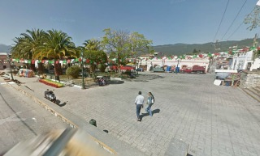
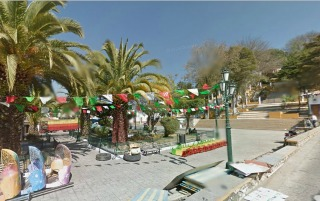
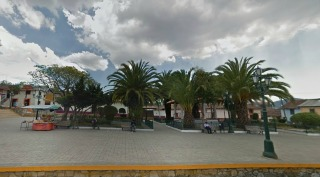
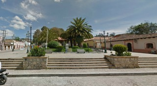
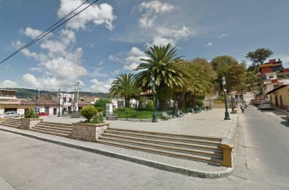

Fue construida a mediados del siglo XIX, frente a la iglesia de guadalupe, cada año es adornada para llevar acabo las festividades de la patrona del barrio la santisima virgen de guadalupe. Asimismo, para recibir a una multitud de peregrinos que se dan cita los días 9, 10 y 12 de diciembre para visitar el templo de la virgen.
Se encuentra ubicada en la calle Real de Guadalupe y Avenida Bernal Díaz del Castillo
Si usted se encuentra ubicado en la plaza de la paz viendo de frente hacia la catedral puede caminar hacia su derecha caminando entre la catedral y la plaza plaza 31 de Marzo como referencia encontrará el templo de San Nicólas y frente a este la Farmacia del Ahorro justo ahí comienza el Andador Guadalupano camine derecho por ese andador hasta terminar y siga derecho sobre esa calle hasta encontrar de frente la plazuela de Guadalupe.
En el lugar usted puede realizar actividades como:
* Fotografía
* Visita a iglesias
* Asistencia a eventos culturales
* Asistencia a eventos gastronómicos
* Asistencia a festivales de música
* Asistencia a festivales folklóricos
* Asistencia a fiesta popular





posicione el mouse sobre las imágenes